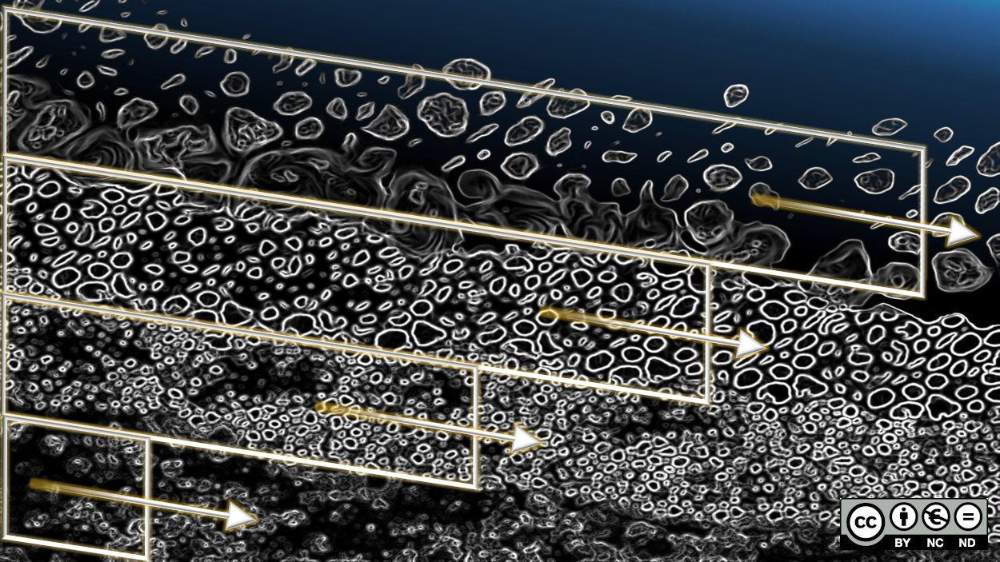
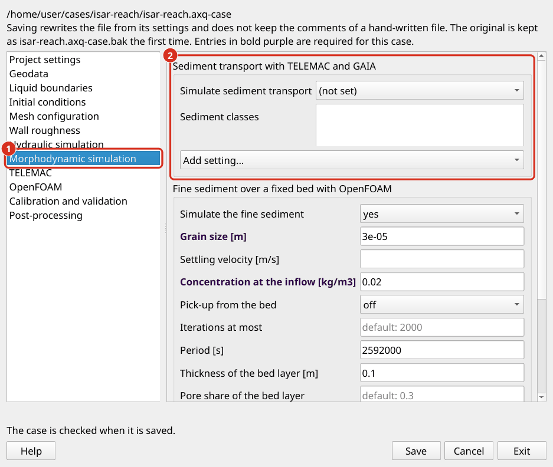
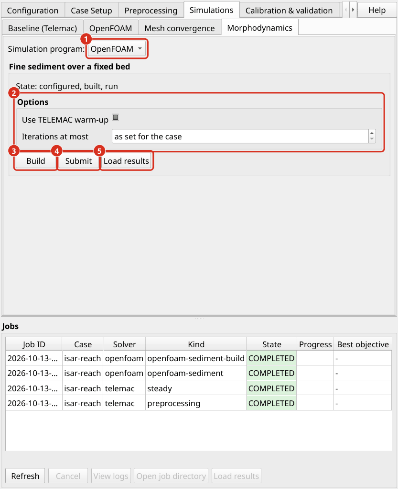

Morphodynamische Simulationen
Eine morphodynamische Simulation berechnet, wie fließendes Wasser Sediment bewegt und wie sich die Flusssohle dadurch verändert. Es erweitert eine hydraulische Simulation: In jedem Zeitschritt bewegt die Strömung Sedimente, die Sohlhöhe wird aktualisiert und das veränderte Bett verändert wiederum die Strömung.
aXqua bietet zwei Simulationen an, die unterschiedliche Fragen beantworten. Die gekoppelte Simulation mit TELEMAC und GAIA berechnet eine Flusssohle, die sich bewegt (Einrichtung von TELEMAC-GAIA). Die Simulation mit OpenFOAM berechnet Feinsediment, das über eine Flusssohle geht, die an Ort und Stelle bleibt (OpenFOAM Setup).
Konzept
Transportarten. Fließendes Wasser bewegt Sediment auf zwei Arten. Geschiebe besteht aus Körnern, die entlang des Bettes rollen, rutschen oder springen. Es ist der dominierende Modus für Kies und gröberes Material. Schwebstofffracht besteht aus feineren Körnern, die Turbulenzen in der Wassersäule über Wasser halten. Die Simulation beider Modi ist rechnerisch aufwendig, so dass nur der dominante Modus aktiviert werden soll:
Kies oder Kopfsteinpflaster mit weniger als etwa 5 bis 10 % Sand: nur Geschiebe;
Sediment, das im Allgemeinen feiner als 1 mm ist, wie in Reservoirs: nur Schwebstofffracht;
Gemische mit hohem Sandgehalt: beide Arten;
kohäsives Sediment (feiner als 0,06 mm): Schwebstofffracht wird benötigt.
Beginn der Bewegung. Ein Korn beginnt sich zu bewegen, wenn die Scherspannung, die die Strömung auf das Bett ausübt, einen kritischen Wert überschreitet. Dieser Schwellenwert wird durch den dimensionslosen kritischen Shields-Parameter ausgedrückt, der für jede Korngröße-Klasse definiert werden muss. Weil es unsicher ist, ist es ein typischer Kalibrierparameter.
Bett wechseln. Die Sohlhöhe verändert sich überall dort, wo sich die Sedimenttransportrate entlang des Strömungswegs ändert. Wenn mehr Sediment an einen Ort gelangt, als es verlässt, Sedimentablagerungen und das Bett steigt. Im umgekehrten Fall erodiert das Bett. Diese Sedimentmassenbilanz wird als Exner-Gleichung (Exner 1925) bezeichnet.
Aktiv Layer. Nur der oberste Layer des Flusssohle nimmt zu einem bestimmten Zeitpunkt am Sedimenttransport teil. Dieses Layer wird als aktives Layer bezeichnet. Es liefert das Sediment, das erodiert wird und erhält das Sediment, das abgelagert wird. Seine Dicke ist ein Vielfaches des charakteristischen Korndurchmessers. Die Layer unten bilden das Substrat, das nur erreicht wird, wenn der aktive Layer erodiert wird. Die Unterscheidung ist wichtig in Flüssen mit einem gepanzerten Bett, wo eine grobe Oberfläche Layer feinere Sedimente darunter schützt (Hirano 1971): Solange die Rüstung Layer intakt ist, bewegt sich wenig Sediment, und sobald es bricht, wird das feinere Substrat schnell erodiert.


Der aktive Layer an der Oberfläche des Flusssohle steht in Kontakt mit dem Fluss. Das Substrat Layer unten kann verschiedene Korngröße Zusammensetzungen haben. Abbildung von Schwindt (hydro-informatics.com, CC BY-NC-ND), konzeptionell nach du Boys (1879) und Church and Haschenburger (2017).
Feinsediment in einem stabilen Bett. Zwischen Überschwemmungen bewegt sich der Schotter einer Flusssohle nicht, und zwei Gelände-Untersuchungen zeigen keinen Bettenwechsel. Das Bett ändert sich dennoch: Sand und Schlamm, den die Strömung mit sich bringt, setzen sich auf sie und in ihre Poren ein, und eine schnellere Strömung entfernt sie wieder. Die Größe, die diese Veränderung beschreibt, ist der Anteil von Feinsediment im Bettmaterial, nicht die Sohlhöhe.
Referenzdaten. Ein Modell eines bewegten Bettes wird gegen gemessene Bettveränderungen bewertet, die als Differenz von zwei Gelände-Umfragen (Morphodynamische Simulation) erhalten werden. Ein Modell von Feinsediment über einem stabilen Bett wird gegen den Anteil der Feinstaub in Bettproben bewertet, die an zwei Tagen genommen wurden.
Einrichtung von TELEMAC-GAIA
GAIA ist das Sedimenttransportmodul von TELEMAC. Wenn morphodynamics.enabled in der Fall-Datei gesetzt wird, schreibt der Preprocessing ein GAIA Steuerdatei (gaia.cas) neben das TELEMAC-Modell und koppelt es mit den hydraulischen Simulationen.


Der Sedimenttransport wird in den Einstellungen Fall eingeschaltet (Open case settings… auf der Registerkarte Case Setup). (1) Die Seite Morphodynamic simulation. (2) Seine Einstellungen, von denen weitere mit Add setting… hinzugefügt werden.
Eintrag in |
Bedeutung |
|---|---|
|
Zu simulierende Transportarten. |
|
Ein Eintrag pro Korngröße-Klasse mit |
|
Nummer der Geschiebe-Transportformel in GAIA (1 ist die Formel von Meyer-Peter und Müller). |
|
Dicke des aktiven Layer [m]. Eine übliche Wahl ist das Dreifache des Durchmessers der groben Körner. |
|
Anzahl Substrat Layer. |
|
Umlenkung des Geschiebe auf einem seitlich geneigten Bett und der Ruhewinkel des Sediments [Grad]. |
|
Umlenkung der Geschiebe durch die Spiralströmung in Flussbögen. |
|
Sedimentversorgung an jedem offenen Rand. |
|
Faktor, um den der Bettwechsel relativ zur Strömung beschleunigt wird. Ein Wert von 10 bedeutet, dass eine simulierte Stunde zehn Stunden Bettwechsel darstellt. Verwenden Sie Werte über 1 mit Vorsicht, und nur für langsam variierende Abflüsse. |
Signifikante Bettveränderungen treten während Überschwemmungen auf. Eine morphodynamische Simulation wird daher üblicherweise mit einer Abfluss-Zeitreihe durchgeführt. Definieren Sie die Zeitreihe unter boundaries.inflow, aktivieren Sie morphodynamics, wiederholen Sie Preprocessing und starten Sie den unstetigen Lauf (TELEMAC-Hotstarts):
axqua <case-file>
axqua submit <case-file> --kind unsteady
Die GAIA-Ergebnisse werden neben den hydraulischen Ergebnissen geschrieben. Die Variable für den Bettwechsel ist die kumulierte Bettentwicklung.
Bemerkung
Die Korngröße Klassen werden von Hand eingegeben. Die automatische Ableitung der Klassen aus gemessenen Korngrößenverteilungen liegt in dieser Version noch nicht vor.
OpenFOAM Setup
Mit OpenFOAM simuliert aXqua Feinsediment über eine Flusssohle, die an Ort und Stelle bleibt. Die Simulation zeigt, wo sich Sand oder Schlamm, den die Strömung trägt, auf dem Bett absetzt und wo die Strömung es wieder aufnimmt. Die Sohlhöhe ändert sich nicht. Verwenden Sie diese Simulation, bei der Umfragen keine messbare Bettveränderung zeigen, während der Anteil von Feinsediment im Bett von einem Probenahmedatum zum nächsten unterschiedlich ist. Verwenden Sie TELEMAC und GAIA, wo sich das Bett bewegt.
Die Simulation verwendet das Solver sediDriftFoam2 von Nils Reidar B. Olsen (Dokumentation). Der Solver berechnet einen stetigen, dreidimensionalen Fluss unter einem festen Wasserspiegel und die Konzentration einer Korngröße in diesem Fluss. Die Körner wandern mit dem Wasser, sinken mit ihrer Absetzgeschwindigkeit und werden durch Turbulenzen vermischt. Am Bett tauschen zwei Prozesse Sediment aus:
Setling. Getreide Flussabschnitt das Bett mit der Rate settling velocity × concentration in the cell at the bed.
Sedimentaufnahme. Der Fluss entfernt Körner mit einer Geschwindigkeit, die aus der Sohlschubspannung folgt, mit den Formeln von van Rijn (1984a, 1984b). Die kritische Scherspannung, bei der sich die Körner zu bewegen beginnen, wird für die Neigung des Bettes korrigiert (Dey 2003).
Das Solver ist nicht Teil von OpenFOAM. Es wird durch die OpenFOAM-Installation von aXqua (OpenFOAM) erstellt und läuft in einem Prozess.
Anforderungen. Die Simulation benötigt das stetige 2D-Ergebnis des Falls (TELEMAC Trockenläufe 2D/3D), weil der Wasserspiegel dieses Ergebnisses die obere Grenze des dreidimensionalen Rechennetzes ist. Das Rechennetz selbst ist das Rechennetz des OpenFOAM-Modells im Modus rigid-lid (OpenFOAM-Auswahl), welcher Modus auch immer die hydraulische OpenFOAM-Simulation des Falls verwendet. Seine Zellgröße (openfoam.cell_size oder openfoam.cell_size_factor) entscheidet, wie lange die Simulation dauert.
Einstellungen. Die Simulation wird im Block fine_sediment der Fall-Datei definiert, der den Rahmen Fine sediment over a fixed bed with OpenFOAM auf der Seite Morphodynamic simulation der Fall-Einstellungen darstellt:
fine_sediment:
enabled: true
grain_size: 0.00003 # [m], coarse silt
inflow_concentration: 0.02 # [kg/m3], which is 20 mg/l
pick_up: off
period: 2592000 # [s], 30 days
layer_thickness: 0.1 # [m]
initial_fraction: 0.15
Eintrag in |
Bedeutung |
|---|---|
|
Durchmesser der Körner [m]. Die Simulation trägt eine Korngröße, bis zu 0,002 m. |
|
Absetzgeschwindigkeit der Körner in stillem Wasser [m/s]. Wenn es leer ist, wird es aus der Korngröße (Ferguson und Kirche 2004) berechnet. |
|
Sedimentkonzentration des Wassers, das in das Modell eintritt [kg/m3]. Eine Zahl gilt für alle Zuflusslinien. Um jeder Zeile ihren eigenen Wert zu geben, benennen Sie die Zeilen, zum Beispiel |
|
Was das Bett zum Flow zurückgibt. |
|
Rauheitshöhe, mit der die Sohlschubspannung berechnet wird [m]. Wenn leer, wird der Median Rauheit des benetzten Bettes verwendet ( |
|
Dicke der Zellen am Bett [m]. Wenn es leer ist, ist es das kleinste Wassertiefe des Modells geteilt durch die Anzahl von Layer. |
|
Größte Anzahl von Iterationen. Die Simulation endet früher, wenn sie konvergiert ist. |
|
Zeit, über die die berechneten Sätze handeln [s]. Wenn leer, enthält das Ergebnis nur Raten. |
|
Das Bett Layer, für das der Anteil der Feinstaub gemeldet wird: seine Dicke [m], der Anteil der Poren zwischen seinen groben Körnern und der Anteil der Feinstaub in seiner Trockenmasse zu Beginn des Zeitraums. |

Die Feinsediment-Simulation wird in den Fall-Einstellungen definiert (Open case settings… auf der Registerkarte Case Setup). (1) Der Rahmen Fine sediment over a fixed bed with OpenFOAM. (2) Seine Einstellungen, von denen weitere mit Add setting… hinzugefügt werden.
Wahl der Sedimentaufnahme. Die Formeln von van Rijn beschreiben ein Sandbett, aus dem der Fluss so viele Körner entfernen kann, wie es seine Scherspannung erlaubt. Ein Kiesbett hält Feinsediment nur in seinen Poren, so dass diese Formeln die Entfernung um Größenordnungen überschätzen. Für Feinsediment über einem Kiesbett, set pick_up: off. Das Ergebnis zeigt dann, wo sich Feinsediment absetzt und wie viel, und die Sohlschubspannung im Ergebnis zeigt, wo der Fluss es wieder entfernen kann.
Simulation. Gehen Sie zu der Registerkarte Simulations, Sub-Tab Morphodynamics und wählen Sie das Simulationsprogramm OpenFOAM aus. Klicken Sie auf Build in der Box Fine sediment over a fixed bed, dann Submit. Beide können nacheinander angeklickt werden, da die Simulation auf ihren Build wartet und der Build auf eine stetige 2D-Simulation wartet, die noch läuft. Die Fortschrittsanzeige zählt Iterationen. Auf einem Rechennetz von 11.000 Zellen dauert die Simulation weniger als eine Minute. In einem Terminal sind die Befehle:
axqua submit <case-file> --kind openfoam-sediment-build
axqua submit <case-file> --kind openfoam-sediment


Das Unter-Tab Morphodynamics des Tabs Simulations mit dem Simulationsprogramm OpenFOAM. (1) Die Auswahl des Simulationsprogramms. (2) Die Optionen: das Aufwärmen für den Build und die größte Anzahl von Iterationen für die Simulation. (3) Build erstellt das Modell. (4) Submit startet die Simulation. (5) Load results fügt das Bett mit seinen Feinsediment auf die Karte.
Ergebnisse. Load results fügt die Layer Fine sediment at the bed zur Karte hinzu. Es hält ein Polygon für jede Spalte von Zellen mit den unten aufgeführten Attributen und wird durch die Änderung des Anteils der Geldbußen oder durch den Nettozinssatz gefärbt, wenn der Fall keine Periode definiert. Die Datei ist axqua-case/openfoam-sediment/fine-sediment-bed.gpkg. Die dreidimensionalen Felder von Geschwindigkeit und Konzentration können in ParaView durch case.foam im gleichen Ordner geöffnet werden.
Attribut |
Einheit |
Bedeutung |
|---|---|---|
|
m |
Wassertiefe. |
|
m/s |
Fließgeschwindigkeit in der Zelle am Bett. |
|
N/m² |
Sohlschubspannung und ihr kritischer Wert für die Korngröße, wie sie Solver berechnet. |
|
- |
Transportparameter von van Rijn: der Überschuss der Scherspannung über ihren kritischen Wert, geteilt durch den kritischen Wert. Null, wo der Fluss die Körner nicht bewegen kann. |
|
kg/m3 |
Sedimentkonzentration in der Zelle am Bett. |
|
kg/(m2 Tag) |
Masse, die sich auf dem Bett absetzt, Masse, die der Fluss aufnimmt, und ihre Differenz pro Bettfläche und Tag. Ein positives |
|
kg/m2 |
Masse von Feinsediment, die das Bett während der Zeit einnimmt. |
|
- |
Anteil der Geldbußen in der Trockenmasse des Bettes Layer am Ende des Zeitraums, und seine Veränderung seit dem Beginn. |
|
- |
-1, wo das Bett Layer alle seine Bußgelder abgegeben hat, 1, wo seine Bußgelder nicht mehr in seine Poren passen. |
Die letzten vier Attribute sind nur vorhanden, wenn der Fall ein period definiert. Sie folgen aus einer Massenbilanz des Bettes Layer. Der Layer hält grobe Körner mit einer Masse von 2650 kg / m3 × layer_thickness x (1 − porosity) pro Bettfläche, die an Ort und Stelle bleiben. Alles Feinsediment, das das Bett einnimmt, wird dem Layer hinzugefügt, und das Layer kann nicht mehr Geldstrafen ausgeben, als es hält. Die Dichte der Körner beträgt durchgehend 2650 kg/m3, da die Formeln des Solver diesen Wert enthalten.
Zusammen mit dem Layer schreibt aXqua ein Sedimentbudget (fine-sediment-budget.json) und druckt es in das Protokoll des Jobs: die Sedimentmasse, die pro Sekunde in das Modell eindringt, die Masse, die es verlässt, und die Massen, die sich niederlassen und über das ganze Bett aufgenommen werden. In einer konvergierten Simulation entspricht das, was eintritt, dem, was geht, plus dem, was das Bett einnimmt. Wenn mehr als 2 % unerklärt bleiben, sagt das Ergebnis das und iterations muss erhöht werden.
Grenzwerte. Die folgenden Grenzen ergeben sich aus dem Solver und aus dem festen Wasserspiegel. Sie sind Teil jedes Ergebnisses:
The water surface is fixed. Es ist der Wasserspiegel des 2D-Ergebnisses und kann nicht auf den dreidimensionalen Fluss reagieren. Wo es innerhalb von zwei Zellen um mehr als die lokale Wassertiefe tritt, wie bei einem Riffel eines flachen Flussabschnitts, wird der Fluss darunter zu schnell, und der Bau verweigert den Fall. Mit
openfoam.allow_stepped_lid: trueist der Fall dennoch gebaut, und das Ergebnis gibt an, wie groß die Schritte sind und wie schnell die schnellste Zelle ist. Lesen Sie das Bett in der Nähe solcher Schritte mit Sorgfalt.The bed does not move. Der Solver kann auch das Bett senken und anheben. aXqua nutzt diese Funktion nicht, da der Solver dann durch Absenken des Bettes ein Minimum an Wassertiefe erzwingt und die Enden des Modells als Enden eines Laborflumes behandelt.
One grain size and one roughness. Sedimentmischungen und Rauheitszonen sind nicht vertreten.
Steep bed. Wo das Bett steil in einer Zelle aufsteigt, berechnet der Solver eine zu hohe Sohlschubspannung. Der Build meldet den Anteil solcher Zellen und lehnt ein Rechennetz ab, bei dem die Berechnung fehlschlagen würde. Kleinere Zellen reduzieren den Anteil.
Steady flow in one process. Eine Abfluss-Zeitreihe kann nicht simuliert werden und die Simulation läuft nicht parallel.
Referenzen
Church, M., and Haschenburger, J. K. (2017). „What is the ‚active layer‘?“ Water Resources Research, 53, 5-10. doi:10.1002/2016WR019675
Dey, S. (2003). „Threshold of sediment motion on combined transverse and longitudinal sloping beds.“ Journal of Hydraulic Research, 41(4), 405-415. doi:10.1080/00221680309499985
Du Boys, P. (1879). „Etudes du régime du Rhône et l’action exercée par les eaux sur un lit à fond de graviers indéfiniment affouillable.“ Annales des Ponts et Chaussées, 5(18), 141-195.
Exner, F. M. (1925). „Über die Wechselwirkung zwischen Wasser und Geschiebe in Flüssen.“ Akademie der Wissenschaften in Wien, math.-naturw. Klasse, Sitzungsberichte, Abt. IIa, 134, 165-203.
Ferguson, R. I., and Church, M. (2004). „A simple universal equation for grain settling velocity.“ Journal of Sedimentary Research, 74(6), 933-937. doi:10.1306/051204740933
Hirano, M. (1971). „River-bed degradation with armoring.“ Proceedings of the Japan Society of Civil Engineers, 1971(195), 55-65. doi:10.2208/jscej1969.1971.195_55
Van Rijn, L. C. (1984a). „Sediment transport, part I: Bed load transport.“ Journal of Hydraulic Engineering, 110(10), 1431-1456. doi:10.1061/(ASCE)0733-9429(1984)110:10(1431)
Van Rijn, L. C. (1984b). „Sediment transport, part II: Suspended load transport.“ Journal of Hydraulic Engineering, 110(11), 1613-1641. doi:10.1061/(ASCE)0733-9429(1984)110:11(1613)